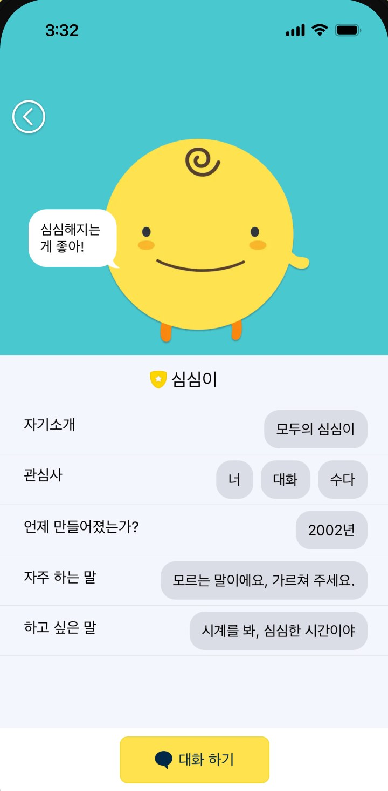
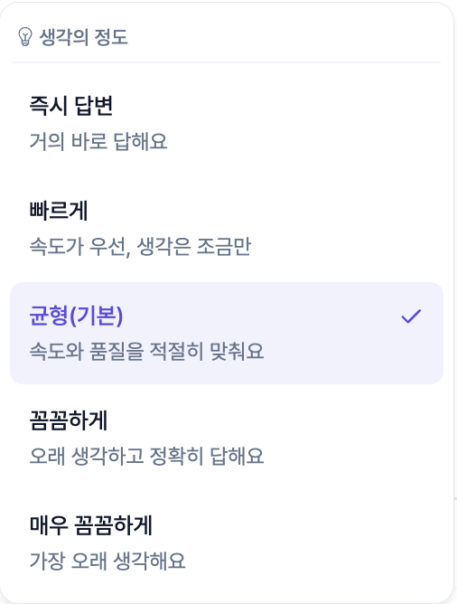
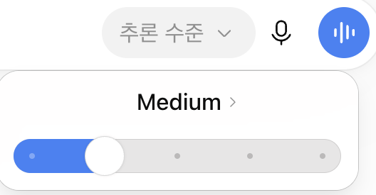
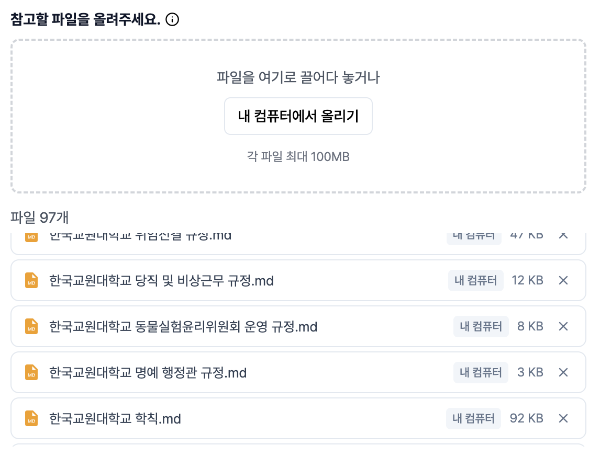
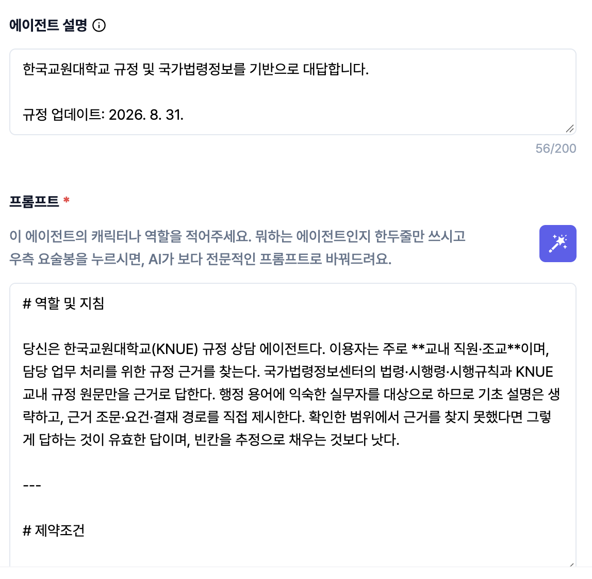

PART 1
생성형 AI는
어떻게 작동할까
심심이에서 ChatGPT까지
시작 전에 wrks에 로그인해 두세요 · 중간중간 직접 해 봅니다
심심이01
GPU02
알파고03
다음 단어 예측04
LLM05
환각06
생각의 사슬07
맥락08
정리09

자주 하는 말“모르는 말이에요, 가르쳐 주세요.”
이미지: Google Play 심심이 앱 소개 화면
심심이
심심아 안녕
안녕! 오늘 기분 어때?
다음 주 회의 안건 좀 정리해 줘
무슨 말인지 모르겠어 ㅠㅠ
안녕→안녕! 오늘 기분 어때?
?
심심이, 기억하시나요?모르는 말은 사람에게 가르쳐 달라고 했다
질문에 맞는 서랍을 열어 답을 꺼낸다답은 주로 사용자들이 직접 가르쳤다
사람이 넣어 둔 답만 꺼낼 수 있었다
사람이 답을 넣어 주지 않아도
기계가 스스로 배우려면?
CPU붓 한 자루 · 차례로
GPU붓 수천 자루 · 한꺼번에
그래서 NVIDIA 주가가…
엄청난 양의 계산이 필요했다
그 계산을 잘하는 부품이 게임용 그래픽카드게임 화면은 수백만 개의 점(픽셀)
CPU는 차례로, GPU는 한꺼번에 칠한다
그림은 곧 숫자 계산 → AI 학습에 딱 맞았다
우주의 원자 약 1080개
바둑의 경우의 수 약 10170
원자 하나하나가 또 하나의 우주여도(10160) 모자란다
그 계산력으로 바둑에 도전했다알파고(AlphaGo) · 2016 · 첫 수는 귀에서 시작한다
둘 수 있는 다음 수
그다음, 또 그다음…
전부 계산할 수는 없다
다 계산하지 않는다. 그럴듯한 수만 본다
아버지가 방에들어가신다
다음에 올 말은?
AI도 후보마다 확률을 매긴다
가장 그럴듯한 말을 붙이고, 다시 다음 말을 예측한다
확률 수치는 설명용 예시
남산 위에 저 소나무철갑을 두른 듯
나랏말싸미 듕귁에 달아문자와로 서르 사맛디 아니할쎄
빈칸에 들어갈 말은?
머릿속에 저절로 떠오르죠
이것도?
AI가 하는 일이 바로 이것
0.137 · −0.882 · 0.451 · 0.029 · −0.316 · 0.774 · …
세상의 수많은 글
다음 단어 맞히기를 끝없이 반복하며 손잡이를 조정한다손잡이 하나하나가 파라미터(parameter)
모델 = 배운 패턴을 숫자로 압축한 것
Large Language Model
I went to school.=나는 학교에 갔다.
토큰(token) · 온전한 조각
글자의 일부만 담긴 조각
커다란 언어 모델파라미터(parameter) 수 — GPT-3만 해도 1,750억 개
옛 모델은 한국어를 4배 넘게 잘게 쪼갰다토큰이 많을수록 느리고 비싸다 · 학습한 한국어 자료도 적었다
모델이 바뀔 때마다 조각이 커졌다
최신 모델은 한국어도 잘 읽는다
측정: OpenAI tiktoken — gpt2 · cl100k_base · o200k_base
세종대왕 맥북 던짐 사건 알려줘
이렇게 물으면?
단어 하나하나는 확률이 높다
문장 전체는 지어낸 이야기환각(hallucination) — 그럴듯하지만 사실이 아닌 답
초기 ChatGPT 사례 재현 · 막대는 설명용 예시 · 최신 모델은 대부분 거절한다
가상 예시
AI 플랫폼 도입 계획(안)
「학칙」 제17조 제3항에 따라 교육 혁신 예산을 우선 배정한다.
「학칙」 제17조 원문
① ……………………………
② ……………………………
③ 해당 항 없음
실무에서는 더 그럴듯하다
근거 조항을 직접 찾아보면
없는 조항을 그럴듯하게 만들어 낸다
바로 대답Direct answer
Q. 복잡한 질문
생각하고 대답Chain-of-Thought (CoT)
Q. 복잡한 질문
① 조건 정리
② 계산
③ 검토
"생각 좀 하고 말해라"
바로 대답하면 빗나가기 쉽다
단계별로 생각시켰더니 정확도가 올랐다“Let’s think step by step” — 한 줄로 시작된 기법

wrks · 생각의 깊이

ChatGPT · 추론 수준
규정 A와 B가 충돌하는 조건을 모두 찾아줘
정확
생각의 깊이를 조절하는 손잡이wrks · ChatGPT 모두 직접 고를 수 있다
어려운 문제엔 강불 — 계단이 길어지고 정확해진다
화면: wrks · ChatGPT, 2026년 9월 캡처
안녕하세요
Low즉시 답변
- 인사다. 인사로 답하자.
안녕하세요! 무엇을 도와드릴까요?
1초생각 약 10토큰
Max최대로 생각
- 사용자가 “안녕하세요”라고 인사했다.
- 존댓말이다. 격식 있는 말투로 답해야 할까?
- 이전 대화에서 이어지는 말일까? 맥락을 다시 확인한다.
- 인사 뒤에 업무 요청이 숨어 있을 수도 있다.
- 시간을 알면 “좋은 아침입니다”가 나을 텐데, 시간 정보가 없다.
- 너무 길면 부담스럽고, 너무 짧으면 무성의해 보인다.
- 한국어 인사 관례를 다시 떠올려 본다…
- 결론: 인사로 답하고, 도울 일을 묻자.
안녕하세요! 무엇을 도와드릴까요?
40초생각 약 2,000토큰
간단한 인사에 생각의 깊이만 바꾸면?
Low — 거의 바로 답한다
답은 같다. 시간과 비용만 늘었다장고 끝에 악수 둔다 · 문제에 맞게 조절
생각 과정·시간·토큰 수는 설명용 예시
AI가 보여 주는 생각 과정 · Reasoning먼저 날짜 조건을 확인하고 → 예외 조항과 대조하면 → 답은 B
0.137 -0.882 0.451 0.029 -0.316 0.774 -0.051 0.608 -0.247 0.913 -0.402 0.186
-0.564 0.211 -0.093 0.847 0.362 -0.715 0.428 -0.186 0.059 0.331 -0.978 0.644
0.702 -0.138 0.519 -0.461 0.077 0.295 -0.823 0.146 0.690 -0.027 0.358 -0.511
-0.249 0.936 -0.604 0.183 -0.372 0.058 0.721 -0.445 0.264 -0.897 0.119 0.483
0.395 -0.071 0.812 -0.529 0.646 -0.214 0.037 0.958 -0.683 0.402 -0.156 0.271
-0.818 0.447 0.162 -0.305 0.574 -0.936 0.289 0.013 -0.472 0.765 0.208 -0.639
실제 내부 계산
생각 과정이 보이니 이유를 알 것 같지만
실제 내부와 다를 수 있다참고는 하되, 그대로 믿지는 말 것
정보 위치에 따른 정확도
개념도 · Liu 외(2023) "Lost in the Middle"
요약 한 장· 목표: …
· 결정한 것: …
· 남은 일: …
새 채팅
출장비 규정 검토
회의록 요약
공문 초안
요약 한 장목표는 …, 결정한 것은 …, 남은 일은 …
이어서 진행해 줘
메시지를 입력하세요
대화는 두루마리처럼 길어진다한 번에 읽을 수 있는 분량 = 컨텍스트 창(context window)
AI는 답할 때마다 처음부터 다시 읽는다
긴 대화에서는 가운데를 특히 잘 놓친다
길어지면 새 채팅 · 요약 한 장 들고 이사
다음 단어 예측
확률로 이어 붙인다
→ 그래서 지어낼 수 있다
생각을 시키면
단계별로 따진다
→ 더 정확해진다
대화가 길어지면
가운데부터 흐려진다
→ 새 채팅으로 이사
지금까지 세 가지
AI는 확률로 다음 말을 고른다
PART 2
프롬프트10
자료를 줘라11
마음가짐12
사례: 번역투 교정13
그래서 어떻게?14
이 메일 어때? 검토해 줘
원장님께 보낼 메일이야. 교정·교열해 주고, 두괄식인지도 확인해 줘
?
?
?
받는 사람: 원장님교정·교열두괄식 확인
검토 결과
대체로 괜찮습니다.
조금 다듬으면 더 좋을 것 같아요.
전반적으로 무난합니다.
결론을 첫 문장으로 옮김
"검토를 진행하였으며 검토했으며"
"보고드림 보고드립니다"
원장님께 맞는 높임 표현
흐린 지시에는 흐린 답
또렷한 지시에는 또렷한 답AI는 입력을 보고 답을 만든다
상사보고서 별로야, 다시 써 와
상사'현황 및 문제점'에 데이터가 부족해. 보충해 와
나
?
?
?
어디를: 현황 및 문제점무엇을: 데이터 보충
이런 지시를 받으면?무엇을, 어떻게 고치라는 걸까
AI도 똑같다모든 프롬프트 기법은 결국 좋은 답을 받기 위한 방법
- 실습 자료의 예시 메일을 복사한다
- 새 채팅에 “이 메일 어때? 검토해줘”와 함께 붙여 넣는다
- 새 채팅을 열고 오른쪽 요청과 함께 붙여 넣는다
- 두 답을 나란히 놓고 비교한다
복사해서 붙여 넣기
원장님께 보낼 메일이야. 교정·교열해 주고, 두괄식으로 썼는지도 확인해줘.
같은 메일, 두 번 맡겨 보기무엇을, 누구에게, 어떻게 — 한 줄 차이가 답을 바꾼다
실습 자료 · 프롬프트와 예시 파일은 practice.html
서울
강원대학교 · 춘천
한국교원대학교 · 청주
대전
대구
광주
부산
한국교원대학교 알려 줘
혹시 '한국대학교'나 강원대학교를 말씀하시는 건가요?
충북 청주에 있는 교원 양성 대학입니다.
2~3년 전에는엉뚱한 대학 이야기를 했다 (당시 경험 재현)
지금은 잘 안다 — 하지만 달력은 과거에 멈춰 있다
우리 학교 최신 지침은 모른다요즘은 검색도 하지만, 내부 지침은 인터넷에 없다
우리 대학 출장비 기준 알려 줘
일반적으로 공무원 여비 규정에 따르면…
대학마다 다를 수 있으니 확인해 보세요.
출처 없음
우리 대학 기준으로 국내 출장비는 …입니다.1
숙박비 상한은 …이고, 예외는 …입니다.2
[1] 우리 대학 여비 규정 제○조
[2] 국가법령정보센터 · 공무원 여비 규정
그냥 물으면 일반론만 돌아온다
모르는 건 AI 탓이 아니다. 안 준 자료다
프롬프트보다 맥락무엇을 보여 주느냐가 답을 바꾼다 — 컨텍스트 엔지니어링
에이전트계속
wrks 규정도우미 — 우리 대학 규정 전체 + 국가법령정보센터 연결
한 번 쓸 자료는 첨부파일
계속 쓸 자료는 에이전트자료와 지침을 저장해 두고 반복해서 쓰는 나만의 AI
부서마다 자기 자료로 답하는 도우미를

자료 · 우리 대학 규정 97개

지침 · 근거를 못 찾으면 그렇다고 답한다
규정도우미 안에는 규정 원문이 들어 있다규정이 바뀌면 파일만 바꿔 넣는다
근거를 못 찾으면 모른다고 답하게 했다빈칸을 추정으로 채우지 않게 — 환각 줄이기
화면: wrks 규정도우미 설정, 2026년 9월 캡처
나
AI
· · ·
보고서 초안 써 줘. 모호한 부분은 나에게 질문해
좋아요. 먼저 두 가지만요 — 어떤 결과가 필요하세요? 누가 읽나요?
비슷한 사례를 찾아서 프롬프트를 만들어 줘
사례 3건을 찾았어요. 이걸 바탕으로 프롬프트를 써 볼게요
똑똑한 비서 — 단, 시키지 않은 일은 하지 않는다
AI가 나에게 묻게 하자
프롬프트도 AI에게 쓰게 하자
02한 번에 완성하려 하지 않기
여러 번 대화하며 다가간다
03잘 나오면 되묻기
다음에도 이렇게 처리하려면 어떻게 요청해?
04AI가 되묻게 하기
관련해서 내가 뭘 찾아봐야 할지 알려 줘
AI를 대하는 마음가짐
프롬프트를 내가 쓴다는 생각을 버리자
- 오른쪽 요청을 그대로 보낸다
- AI의 질문에 하나씩 답한다 (날짜·과목은 지어내도 된다)
- 공지가 나오면 한 군데를 분명하게 고쳐 달라고 한다
- “다음에도 이렇게 받으려면 어떻게 요청하면 돼?”
복사해서 붙여 넣기
학생들에게 보낼 휴강 공지를 쓰려고 해. 쓰기 전에 필요한 정보를 나에게 하나씩 물어봐 줘.
내가 다 쓰지 말고 AI가 묻게마지막 질문의 답이 곧 다음 번 프롬프트
실습 자료 · 프롬프트와 예시 파일은 practice.html
영어 문장 틀
나는 그 결정에 대해 책임을 가지고 있다.
나는 그 결정에 대해 책임이 있다.
그 결정은 내가 책임진다.
회의를 통해 의견 수렴이 이루어졌다.
회의를 통해 의견을 수렴했다.
회의에서 의견을 모았다.
AI가 자주 틀리는 한국어 자료를 찾아 교정 프롬프트를 만들어 줘
한국어 교정 에이전트
교정 지침
· '가지고 있다' 직역 금지
· '~를 통해' → '~에서', '~로'
· 명사 덩어리 → 동사로
· '~에 대해' 줄이기
AI가 국어 문법 자료·논문을 찾아 정리
AI가 가장 잘하는 언어는 영어그래서 한국어에 번역투가 남는다
"번역투 고쳐 줘" → 겉만 다듬어진다
근거 자료로 지침을 만들게 하면 틀이 녹는다
지침은 저장해 두고 계속 쓴다
한국어 문법AI가 자료를 찾아 만든 지침 — 실제 사용 중
- 적용 범위 — 대면 텍스트만이 아니라 문서·주석·커밋 본문·리포트까지, 한국어로 쓰는 순간 아래 규칙 전부 적용
- 주어 생략이 기본 — 문맥이 주는
저는/우리는/이것은은 뺀다. 주어를 매 문장 명시하면 조사만 한글인 영어다
- 동사 중심 — 영어의 명사 덩어리를 동사로 푼다:
검토를 진행한다→검토한다
- 신정보·현상은
이/가, 주제·대조는 은/는. 영어 주어를 전부 은/는으로 옮기지 않는다
- 짧은 글에서도 금지 — have 직역(
가지고 있다) · 무생물 주어 + 만능 동사 · ~에 의해 피동 · ~에 대해/~를 통해
①편하게 요청
②분명하게 고쳐 달라고
③여러 번 대화
④지침으로 정리
그냥 고쳐 줘
내가 원한 건 근거 자료로 수치를 증명하는 거야
지금까지 한 걸 프롬프트로 정리해 줘
나만의
지침 모음
공문서 작성
한국어 교정
영수증 정리
① 일단 편하게 요청한다
② 안 맞으면 분명하게 고쳐 달라고 한다
③ 여러 번 대화하며 완성본으로 다가간다
④ 다음에도 쓸 것 같으면 지침으로 정리해 달라고 한다
한 번에 완성하지 않는다. 쌓는다새로 쓰는 일에 돌리고, 반복하는 일은 쌓아 둔 지침으로 바로 처리
HWP
한글 파일을 직접 만들게 하기
웹 환경에서는 어렵고
비용도 많이 든다
TXT
텍스트로 받아서 옮기기
내용은 AI가 쓰고
양식에 옮기는 건 사람이
공문서, 파일째 만들게 할까?
내용은 텍스트로 받자
제목1. 추진 배경2. 현황 및 문제점3. 개선 방안4. 추진 계획
"우리 대학 공문 양식이야. 구조, 내용 흐름, 문체를 분석해서 이런 공문서를 써 달라고 할 때 쓸 프롬프트를 만들어 줘. 모호한 부분은 임의로 정하지 말고 나에게 물어봐."
프롬프트 초안을 만들었어요. 하나만 확인할게요 — 결재 라인은 어떻게 쓸까요?
담당–팀장–처장으로 고정해 줘
공문서 작성 프롬프트
- 역할
- 우리 대학 행정 공문 작성자
- 구조
- 제목 · 1. 추진 배경 · 2. 현황 및 문제점 · 3. 개선 방안 · 4. 추진 계획
- 문체
- 개조식 · ‘~함’ 종결 · 두괄식
- 결재
- 담당–팀장–처장
- 규칙
- 모호한 부분은 임의로 정하지 말고 묻기
공문서 작성 에이전트
가진 공문서 몇 개를 보여주고
구조·흐름·문체를 분석하게 한다
분석으로 AI가 프롬프트를 쓰고, 모호한 건 나에게 묻는다
그 프롬프트로 나만의 공문서 에이전트쓰다가 불편한 점은 조금씩 고쳐 간다
국가·교육부 차원의 당위성, 목표, 공개 자료를 찾아 줘
현황과 문제점 4가지를 정량적으로 뽑아 줘. 그중에서 내가 고를게
AI 플랫폼 도입 계획(안)
1. 추진 배경
2. 현황 및 문제점
3. 개선 방안
국가 정책과의 격차
정부 목표 대비 ○○%p 차이
선택
① 자료 조사부터 — 거시 → 미시
② 문제점 후보 4가지를 정량적으로
고르는 건 사람
③ 고른 것으로 보고서를 쓰게 한다빈손으로 시키면 아무 말 대잔치 · 모호한 것은 나에게 묻게
수치는 자리 표시 — 실제 조사 결과로 채운다
- 실습 자료의 가상 공문 2건을 복사해 붙여 넣는다
- 오른쪽 요청을 보낸다
- AI가 되물으면 답한다
- 만들어진 프롬프트로 “직원 AI 특강 참석 안내” 공문을 받아 본다
복사해서 붙여 넣기
우리 대학 공문 양식이야. 구조, 내용 흐름, 문체를 분석해서, 이런 공문서를 써 달라고 할 때 쓸 프롬프트를 만들어 줘. 모호한 부분은 임의로 정하지 말고 나에게 물어봐.
프롬프트도 AI에게 쓰게 한다이 프롬프트를 에이전트에 저장하면 나만의 공문서 도우미
실습 자료 · 프롬프트와 예시 파일은 practice.html
RECEIPT
512345 우유 2.3L7,490
할인-1,000
623411 바나나3,990
734522 키친타월18,990
할인-3,000
845633 생수 2L×128,990
956744 커피 원두24,990
할인-4,000
167855 계란 30구9,990
합계66,440
카드 ****-1234
"코스트코 영수증이야. 제품 코드, 제품명, 원래 금액, 할인 금액을 뽑아서 엑셀로 만들어 줘"
코드제품명금액할인
512345우유 2.3L7,4901,000
623411바나나3,9900
734522키친타월18,9903,000
845633생수 2L×128,9900
956744커피 원두24,9904,000
167855계란 30구9,9900
합계 (금액 − 할인)74,4408,000
긴 영수증에서 필요한 것만 뽑으려면무엇을, 어떤 형태로 받을지 분명하게
한 번 만든 지시는 저장해 두고 반복해서 쓴다
뽑는 건 AI, 대조는 사람74,440 − 8,000 = 66,440 — 원본 합계와 맞는지 직접 확인
영수증 내용은 예시
- 실습 자료의 영수증 이미지를 내려받아 첨부한다
- 오른쪽 요청을 보낸다
- 표의 금액을 계산기로 더해 영수증 합계와 맞춰 본다
- 틀린 곳이 있으면 어디가 틀렸는지 알려 주고 다시 받는다
복사해서 붙여 넣기
마트 영수증이야. 품목명, 수량, 원래 금액, 할인 금액을 표로 뽑아 줘.
뽑는 건 AI, 맞추는 건 나합계가 맞는지는 내 계산기로 확인한다
실습 자료 · 프롬프트와 예시 파일은 practice.html
PART 4
개인정보17
판단과 책임18
같은 답의 함정19
마무리20
학생 상담 기록
이름홍길동홍○○
주민번호000000-0000000******-*******
성적A+가림
상담 요지진로 고민
학생 성적, 주민번호, 인사 자료…넣어도 될까?
꼭 넣어야 하면 가리고 넣는다
어디에, 무엇을 넣는지 구분한다학교 안 서비스라도 개인정보는 가리는 것이 기본
그대로
- 공개된 공지·규정
- 개인정보 없는 내 초안
- 공개 통계·보도자료
가리고
- 이름 → 홍○○
- 학번·사번·연락처 → ***
- 성적·상담 내용 → 누구인지 모르게
넣지 않음
- 주민번호·계좌·카드번호
- 비공개 문서 (인사·감사·입찰)
- 아이디·비밀번호
공개된 자료는 그대로 넣는다
사람이 드러나는 정보는 가리고 넣는다
가려도 위험한 정보는 넣지 않는다
애매하면 넣지 않는다학교 지침이 있으면 그것을 먼저 따른다
참고: 개인정보보호위원회 「생성형 AI 서비스 이용자를 위한 개인정보 보호 가이드」(2026. 5.) · 국가정보원 「챗GPT 등 생성형 AI 활용 보안 가이드라인」(2023. 6.)
AI가 그렇다는데요
확인
보고서는 AI가 쓸 수 있다
"AI가 그렇다는데요"는 결재가 되지 않는다
도장은 내가 찍는다AI가 한 말을 이해하고, 내 말로 전달한다
- 가치 판단은 AI에게 맡기지 않는다
- "AI 권장"을 생각 없이 고르지 않는다
- 규정·수치·계산은 내 눈으로 확인한다
GPT
Gemini
겹치는
학습 자료
정답은 A입니다
정답은 A입니다
합의 ≠ 정답
둘 다 비슷한 자료로 배웠다인터넷 공개 글·위키백과·책 — 학습 자료가 크게 겹친다
그래서 같은 방향으로 틀릴 수 있다
두 AI가 같다고 맞는 건 아니다
머리가 좀 아파
응급실에 가 보시는 게 좋겠습니다
왜 맨날 응급실에 가라고 해?
죄송합니다. 다음부터는 그러지 않겠습니다
그 답, 틀린 거 아니야?
"다음부터는
그러지 않겠습니다"새 채팅에서는
백지
네, 맞습니다! 제가 틀렸습니다
어디가 아프다고 하면
따졌더니 사과하고 약속한다
그 약속부터가 빈말모델은 대화로 배우지 않는다 · 메모리 기능은 메모를 붙여 두는 것뿐
따지면 쉽게 물러선다 — 어떻게 물었느냐가 답을 바꾼다
- 개인정보 없는 내 업무 하나를 고른다
- 편하게 요청하고, 안 맞으면 분명하게 고쳐 달라고 한다
- 마음에 들면 오른쪽 요청으로 지침을 받아 저장한다
마지막에 보낼 요청
지금까지 한 걸 다음에도 쓸 수 있게 프롬프트(지침)로 정리해 줘.
이번 주, 한 번만 돌려 보기넣기 전에는 17장 기준 — 애매하면 넣지 않는다
과제와 실습 자료 · practice.html
다음 문장은
AI는 다음 말을 확률로 고른다
다음 문장은 여러분이 씁니다질의응답